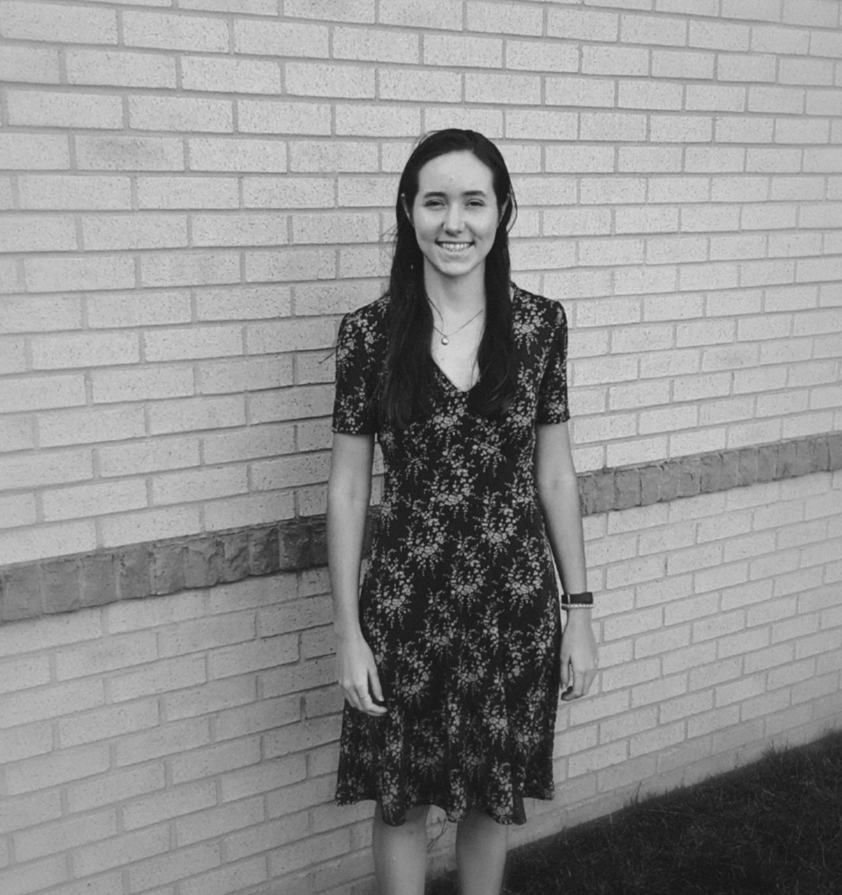

Leanne Morgan
Senior in Greenville, South Carolina
I am a Senior at Bob Jones University studying Interior Architecture and Design. I work for the Art + Design department as a design studio building assistant.
I enjoy sowing, playing soccer,and taking pictures. I have a passion for ministry and hope to someday help with a start up of a church. A verse I recently became my favorite is Psalm 25:4-5 "Show me your ways, LORD, teach me your paths. Guide me in your truth and teach me for you are God my savior, and my hope is in you all day long."
I also enjoy thrifting with my sister so we started our own thrift shop on Instagram called Apparel & Accessories Thrift
EDUCATION
2022 Interior Architecture and Design GraduateBob Jones University